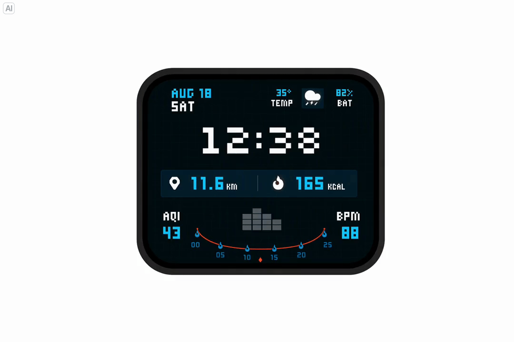
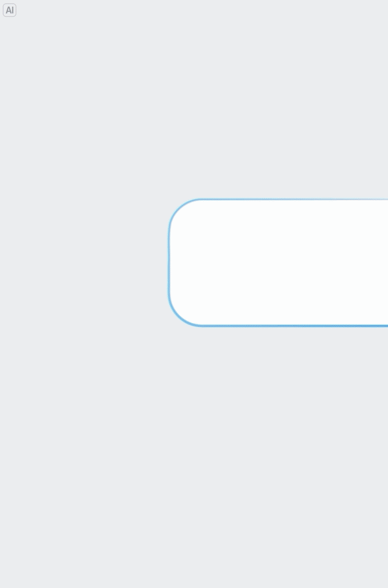

Seedream 5.5：生成结果能否成为下一轮可靠的工作材料
身份、日期与一手来源
本轮在 2026-11-09 的官方模型导航中首次观察到 Seedream 5.5，并打开实际模型页确认。当天早间导航仍为 Seedream 5.0 Pro；下午导航变化仅证明两次巡检之间目录发生更新，不证明 11 月 9 日就是模型首次发布日。Atlas 用 2026-11 作为归档月份，在“发布日期待核实”中显示，不进入有精确发布日期的近30天表格。
| 项目 | 当前可以确认的内容 |
|---|---|
| 团队 / 产品族 | ByteDance Seed / Seedream |
| 定位 | 多模态图像生成与编辑模型；属于专项支线 |
| 官方强调 | 多轮编辑保持、透明素材、真实质感 |
| 首发日 | 待核实；2026-11-09 是发现/归档日 |
| 参数、架构、训练量 | 当前页面未披露 |
| 开放权重 / 许可证 | 当前材料未验证，不标为已开源 |
| API 参数、价格、额度 | 未验证；页面存在 API 按钮不能替代实际文档 |
| 相对5.0 Pro提升幅度 | 未见同条件定量证据，不编造百分比 |
多轮编辑：要同时看修改与保持
官方写明“支持非编辑区域像素级保持”，并展示逐步添加和替换家具、灯具与装饰，同时调整颜色、位置与透视。另一组例子连续修改人物发型、眼镜、服装、背景和桌面道具。重点是一个已有画面经过多次操作后还能继续使用，而非每次重新生成一张视觉相近的图片。

图为官方精选展示，不能据此得到总体成功率或所有场景的像素一致性。相机视角、阴影、遮挡与材质会相互影响：只看最终图可能掩盖中间轮次的漂移，也可能把合理的光照联动误判成失败。
建议把同一轮验收拆成两个判断：目标属性是否按指令改变，受保护内容是否仍满足约束。对允许编辑区域使用任务相关的语义判据，对明确保护的区域比较像素差异和结构一致性；区域边界、重新编码、颜色空间与允许误差必须事先固定。不要把一个图像相似度分数直接叫作“编辑成功率”。
| 任务 | 必须检查 | 单独看美观会漏掉什么 |
|---|---|---|
| 家具替换 | 新物体位置、尺度、透视、接触关系 | 房间结构被悄悄改动 |
| 人像多轮修改 | 指定属性、身份与受保护区域 | 每轮变成不同人物 |
| 图表/表盘编辑 | 文本、数字及布局对应关系 | 图像漂亮但数值错位 |
| 连续操作后撤回 | 被撤销属性与历史状态 | 不可逆的累积漂移 |
这些是建议实验设计，不是官方已经报告的 benchmark。
透明素材：输出应能真正参与合成
官方强调原生透明与半透明背景，列举独立图层、RGBA 提取、贴纸和艺术字。价值在于结果能放进新的设计中，减少背景去除、边缘修复和重新合成的步骤。

这里展示的是官方案例动画；动画本身不是模型输出文件的 alpha 通道证据。正式验收应获取实际输出文件，检查通道、软边缘、半透明材料及不同底色下的合成效果。透明玻璃、羽毛、毛发和细小孔洞比硬轮廓贴纸更能暴露问题。
建议对同一素材在浅色、深色和复杂背景上合成，查看边缘色溢出、预乘alpha解释是否一致，以及阴影是否被错误烘焙进透明区。对分层输出还应检查每层的坐标、缩放和人物身份；“每张都好看”不能保证组合后对齐。
真实质感：区分创作观感与事实正确性
官方页面描述自然光影、材质与肌肤纹理，并给出闪光灯/胶片风格、室内暖光、街头抓拍和雨后反射等案例。以下保留一张官方摄影质感图，供核对视觉呈现。
这些展示支持其产品关注点，但不是盲测偏好率，也不是对真实世界事实的验证。照片风格、文字遵循、物体关系和局部编辑保持是不同维度。不能从“像真实摄影”推导出“画面记录真实事件”，也不能推导为物理关系始终正确。
评测时应固定提示词、输入图、采样预算与候选选择规则。分别报告观感偏好、指令完成、结构/文字错误和返工次数；展示未筛选样本及失败案例，避免只比较每个模型最漂亮的一张图。页面未公开的分辨率、延迟、价格或批量限制，需要后续实测或官方文档验证。
对 Agent Training 的启发
我会优先测连续多轮下的漂移，而不是先堆叠单次生成题。比较固定轮数中的完成率、受保护区域错误、撤回成功率与总返工成本。若使用它合成训练数据，还需记录完整输入输出、编辑历史和可验证标签，避免把宣传精选图的质量当作批量数据质量。
当前不能从公开页面确认它使用了什么 RL、蒸馏或视觉反馈机制；也不能宣称它已经改善了某个 Agent benchmark。已有 Seed2.1 面向通用 Agent，Seedream 则是图像生成/编辑工具族，两者不要合并成新的通用基模正代。
仍需补齐的证据
首发日、完整技术报告、训练和数据治理说明、同条件评估、真实输出格式、失败分布、API 可用性及价格、权重与许可证均未核实。若后续出现正式 Tech Blog / Report 或 HF 模型卡，原地补充本笔记与 Poster，并用明确证据修正日期；不另建重复节点。
📊 相关可视化：中文 Poster